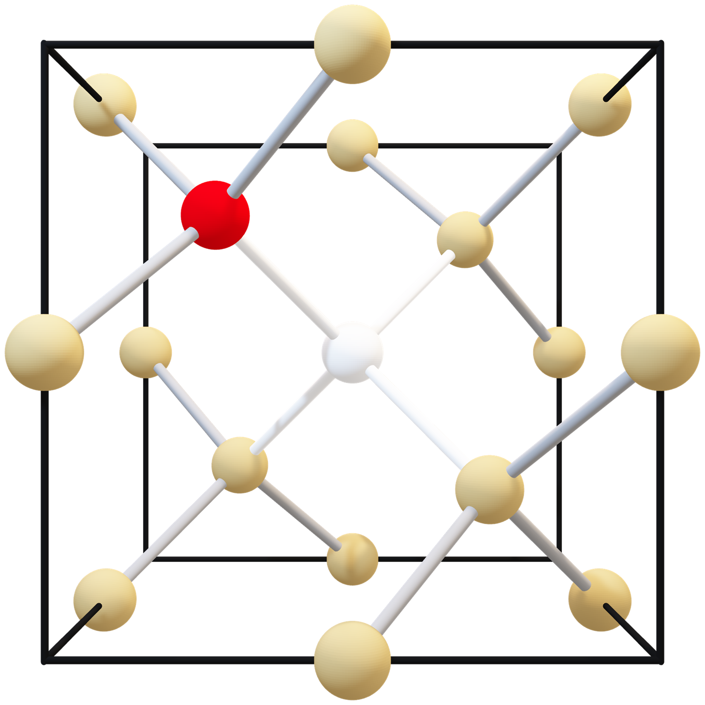

Low-Cost Experimente mit NV-Zentren
Tutorial: Building an ODMR Setup
In diesem Workshop konstruieren wir ein ODMR (Optically Detected Magnetic Resonance) System mit dem UC2 modularen Mikroskop-Toolbox und NV (Nitrogen-Vacancy) Diamanten. ODMR ist eine Quantensensing-Technik, die es uns ermöglicht, Magnetfelder durch Beobachtung von Fluoreszenzänderungen in Quantensystemen zu messen.
Quick Start
Theoretischer Hintergrund
Was sind NV-Zentren?
NV-Zentren sind Fehlstellen in Diamanten, bestehend aus einem Stickstoffatom neben einer Vakanz (Leerstelle). Diese Quantensysteme haben einzigartige Eigenschaften, die sie ideal für Sensoranwendungen machen:
- Spin-1 Grundzustand mit drei möglichen Projektionen
- Optische Anregung bei 532 nm (grün)
- Fluoreszenz im roten Spektralbereich
- Raumtemperatur-stabile Quantenkohärenz

ODMR-Prinzip
Der ODMR-Effekt basiert auf spinabhängiger Fluoreszenz. Wenn Mikrowellenstrahlung bei der Resonanzfrequenz (~2,87 GHz) angewendet wird, verursacht sie Übergänge zwischen Quantenspinzuständen, was zu einer messbaren Abnahme der Fluoreszenzintensität führt.
Schlüsselkonzept:
Externe Magnetfelder verschieben die Resonanzfrequenzen durch den Zeeman-Effekt, wodurch präzise Magnetfeldmessungen ermöglicht werden.
Moderne Anwendungen
Biomedizinische Bildgebung
Kartierung von Magnetfeldern in lebenden Zellen und Geweben
Materialwissenschaft
Untersuchung magnetischer Domänen und Spintransport
Quanteninformation
Bausteine für Quantencomputer und -netzwerke
Fundamentale Physik
Test der Quantenmechanik und Messung von Fundamentalkonstanten
Versuchsaufbau
Der ODMR-Aufbau folgt konfokalen Mikroskopieprinzipien und kombiniert optische Anregung, Mikrowellenmanipulation und Fluoreszenzdetektion für hochpräzise Quantensensing.
Benötigte Komponenten:
- • Grundplatte für Montage
- • Grüne Laserdiode (532 nm)
- • 45° Spiegel für Strahlführung
- • Strahlteiler mit Filter
- • Konvergente Linse
- • Lichtsensor (Photodiode)
- • Elektronik-Box mit Mikrowellenerzeugung
- • XY-Bühnensystem mit NV-Diamant
- • Magnet für externes Magnetfeld
- • Mikrowellenantenne
⚠️ Sicherheitshinweise
- Niemals direkt in den Laser blicken
- Vorsicht bei Implantaten und elektronischen Geräten
- Stromversorgung vor Verkabelungsänderungen trennen
Das QuantumMiniLabs Projekt
Das QuantumMiniLabs-Projekt entwickelt ein Open-Source-Ökosystem, das kostengünstige, skalierbare, modulare und reparable Quantentechnologie-Experimente ermöglicht. Das Ziel ist es, das System an 100 Bildungsstandorten in Deutschland einzusetzen.
QuantumMiniLabs bietet die erste erschwingliche DIY-Plattform für Experimente mit Quantensystemen der zweiten Generation. NV-Diamanten ermöglichen stabile Experimente bei Raumtemperatur.